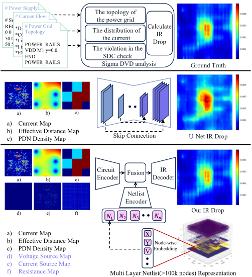
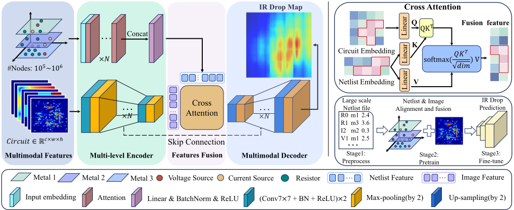
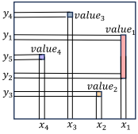
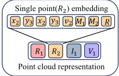
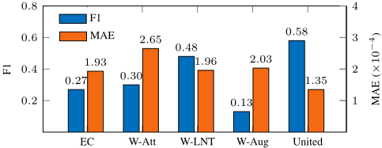
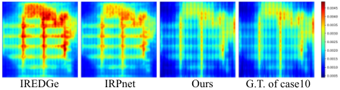

LMM-IR：面向静态 IR-Drop 预测的大规模网表感知多模态框架
静态 IR drop 分析是先进工艺芯片 sign-off 的关键环节，但基于仿真的全芯片分析可能耗时数小时，且违例修复需从 initial placement 到 final sign-off 反复迭代，成为设计周期瓶颈。论文提出 LMM-IR 多模态框架：将 SPICE 网表拓扑直接编码为 3D 点云，用大规模网表 Transformer（LNT）处理十万级以上节点网表，并与电流图、有效距离图、PDN 密度图等电路级特征经 cross-attention 融合，解码端经 4 次 2× 上采样与 1×1 卷积输出 IR drop 图；训练采用重建预训练加 IR drop 预测微调的两阶段策略，辅以 Gaussian 噪声增广。在 ICCAD 2023 竞赛 hidden cases 上，F1 较第一名队伍提升 20%，取得参赛队伍与 SOTA 方法中最佳 F1 与最低 MAE，消融显示 LNT 贡献最大。对团队而言，这是 2.3 域"ML 辅助功耗预测"的直接参考，可用于加速 IP 物理实现阶段的电源完整性与时序裕量迭代。
基于仿真的静态 IR drop 分析在全芯片规模下非常耗时（可达数小时），且 IR drop 违例修复需从 initial placement 到 final sign-off 跨多个设计阶段反复迭代仿真，计算与时间成本高。已有 ML 方法存在局限：PowerNet 逐 cell 预测难以选择合适 cell 尺寸且耗时；基于 U-Net/CNN 的方法（如 IREDGe）难以捕获全局电路上下文；IRPnet 依赖单模态特征，难以刻画电路复杂特性；传统将网表转为 2D 图的表示逐像素合并、忽略跨层空间连接关系，对热点小目标易产生误报（FP）。论文目标是构建快速且准确的静态 IR drop 预测框架，在可接受推理时间内达到最高 F1 与最低 MAE。
提出双流多模态架构 LMM-IR，含四个组件：circuit encoder、Large-scale Netlist Transformer（LNT）、多模态融合模块与解码器。电路编码器用 CNN 下采样结构提取 current map、effective distance map、PDN density map 及新增的 voltage/current source plot 与 resistance map 的层次空间特征，并用 scaling/padding 与逐通道归一化处理边长 204–930 不等的输入。核心创新是将 SPICE 网表直接编码为 3D 点云（每点含坐标、电气值、元件类型 R/I/V、起止层信息，起止层相同即为 via），经可训练 embedding 后用 LNT 的 self-attention 提取网表全局特征，可无损编码超过 100k 节点的网表；模态间用 cross-attention 融合，解码端做 4 次 2× 反卷积上采样并以 1×1 卷积输出预测图。训练采用 MSE 损失与两阶段策略（先用重建任务预训练增强电路与网表的联合表示，再微调 IR drop 预测），并用标准差范围 (0, 1e-3) 的 Gaussian 噪声增广扩充训练集，整体为端到端 GPU 加速流程。
在 ICCAD 2023 竞赛 hidden cases 上，F1 较第一名队伍提升 20%；在 10 个测试 case 中 6 个取得最佳 F1，整体平均 F1 最佳；相对获胜队伍与 SOTA 方法（IRPnet、IREDGe）取得最佳 F1 与最低 MAE
可无损编码超过 100k 节点的网表（摘要称可处理数十万至百万节点）；测试 case 节点规模约 15,768–166,734
消融实验（ICCAD2023 benchmark）：对 F1 影响从大到小为 LNT、attention 机制、数据增强；对 MAE 影响从大到小为 LNT、数据增强、attention 机制，LNT 为最大贡献
训练集共 3310 cases：ICCAD2023 提供的 100 fake + 10 real 训练 case（fake×10、real×20 过采样）加 BeGAN 生成的 2000 cases；训练配置为 NVIDIA GeForce RTX H100 80GB、PyTorch 2.1.1、batch size 16、初始学习率 0.001、共 200 epochs
论文自称首次面向静态电压降预测提出基于 LNT 大规模网表嵌入的多模态融合模型。相对已有工作的区别：(1) 首次将网表拓扑表示并处理为 3D 点云，区别于传统将网表压成 2D 图（逐像素合并、忽略跨层空间连接）的做法，可处理十万至百万节点网表且无信息损失；(2) 将网表特征与电路级图像特征多模态互补融合，区别于 PowerNet、IREDGe、IRPnet 等单模态方法；(3) 端到端 GPU 加速流程与两阶段训练（重建预训练+微调）；(4) 与第二名队伍依赖参数化生成约 5400 个额外训练 case 不同，本文主要依靠点云网表编码与 Gaussian 噪声增广取得更优 F1。
相关度级别：high
命中能力域：2.3 时序与物理实现
理由：论文直接命中 2.3 域的"ML 辅助时序/功耗预测"与"先进工艺 sign-off 方法学"：静态 IR drop 是先进工艺电源完整性 sign-off 的核心项，论文明确指出电压降会降低晶体管速度、发生在关键路径上可能导致功能失效，直接关系团队高速接口 IP 的时序收敛与 sign-off 裕量决策。团队在 LPDDR5X/HBM4/UCIe 等先进工艺 IP 实现中需反复进行 IR/电源网格分析，"数小时级商业工具仿真 vs ML 快速推理"的差距正是可落地的价值点。上游 catalog 标注的 2.7 域与论文内容并不直接对应——论文不涉及验证流程自动化或 AI 辅助验证/RTL 生成，仅其多模态融合与大规模网表点云编码思路可作为团队构建 AI 辅助流程时的方法学借鉴，故不计入直接命中。
建议动作：深入精读并做内部分享
arXiv:2511.12581v2 [cs.LG] 2026年6月3日
LMM-IR：面向静态IR压降预测的大规模网表感知多模态框架
Kai Ma 1 , Zhen Wang 1 , Hongquan He 1 , Qi Xu 2 , Tinghuan Chen 3 , Hao Geng 1 † 1 上海科技大学 2 中国科学技术大学 3 香港中文大学（深圳）
摘要——静态IR压降分析是芯片设计领域中一项基础且关键的任务。然而，这一过程可能相当耗时，有时需要数小时之久。此外，解决IR压降违例往往需要迭代分析，从而造成计算负担。因此，快速且准确的IR压降预测对于缩短芯片设计所投入的总时间至关重要。在本文中，我们首次提出了一种新颖的多模态方法，通过大规模网表Transformer（LNT）高效处理SPICE文件。我们的核心创新在于将网表拓扑表示并处理为三维点云表示，从而能够高效处理节点数高达数十万乃至数百万的网表。所有类型的数据，包括网表文件和图像数据，均被编码为潜空间中的特征并输入模型，用于静态电压降预测。这使得来自多种模态的数据得以融合，实现互补性预测。实验结果表明，在ICCAD 2023竞赛的获胜队伍以及当前最先进算法之中，我们所提出的算法能够取得最佳的F1分数和最低的MAE。
随着人工智能（AI）与高性能计算（HPC）的同步发展，chiplet [1] 等新型技术路径带来了设计挑战与显著的功耗问题。对信号网络与电源分配网络（PDN）中完整性损失的分析与最小化已变得日益重要。每个晶体管，无论是 nMOS 还是 pMOS，都需要供电，电能通过金属层分布到整个微处理器 [2]。尽管芯片尺寸保持相对恒定，制造工艺的进步却使导线变得更细，尽管长度并未缩短。这一趋势导致单位长度电阻显著增加。例如，从 28 nm 节点到 7 nm 节点，电阻增加了近十倍，且预计在更小的几何尺寸下将呈指数级增长。电流通过电阻时会产生电压降。电压的下降可能导致晶体管速度降低，如果这种情况发生在设计中的关键路径上，则可能引发功能失效 [3]。性能退化和功能失效的潜在风险要求在整个设计周期内采用全面的方法进行 IR drop（电压降）分析。IR drop 已成为众多 EDA 厂商的关键关注点。
为应对这些挑战，设计工程师必须在从初始布局到最终签核的各个设计阶段中反复评估并解决电压降（IR drop）问题。商用工具的工作流程如图 1 所示。然而，使用基于仿真的方法来获取精确的IR drop估计是一个极其耗时的过程 [4]。因此，依赖频繁仿真的IR drop缓解策略通常需要大量的计算资源和时间，尤其是在全芯片规模上进行静态电压降仿真时。为了提高这一过程的效率，迫切需要一种既快速又准确的IR drop估计方法。随着人工智能（AI）的快速发展，越来越多的基于机器学习（ML）的方法被提出用于预测静态IR drop。PowerNet [5] 提出了一种利用卷积神经网络（CNN）进行逐单元预测的方法。然而，很难找到合适的单元尺寸，并且逐个处理每个单元十分耗时。此外，IREDGe [6] 采用 U-Net [7] 架构来分析IR drop，而传统CNN往往难以捕获全面的全局电路上下文，从而导致潜在的不准确性。另外，诸如 IRPnet [8] 等最新进展提出了一种形状自适应卷积核，以从物理结构中捕获更多信息。尽管如此，IRPnet 所采用的方法受限于其对单模态特征的依赖，这可能不足以捕获电路固有的复杂特性。为了解决这些根本性挑战，我们提出了一种新颖的多模态融合架构 LMM-IR。我们的框架引入了一种具有图形处理器（GPU）加速的端到端范式，能够自主优化整个芯片范围内的IR drop预测。LMM-IR 架构创新性地集成了大规模网表Transformer（LNT），以全面表示网表特征，从而能够更好地捕获金属层之间的三维空间关系。通过将网表数据与电路级信息进行对齐和融合，我们的方法促进了不同模态之间的相互增强，为IR drop预测提供了更鲁棒、更准确的表示。我们的模型（称为LMM-IR）与以往基于机器学习的工作之间的主要差异总结于表 I 中。
† 通讯作者。

不同于传统的基于仿真的技术和单模态模型，我们提出了一种新颖的大规模网表感知多模态框架，从根本上变革了静态电压降估计，实现了卓越的精度和计算效率。我们的多模态框架示意图如图 1 所示。
我们的贡献总结如下：
片上供电网络（PDN）结构 [11] 可以建模为一个由电压源、电流源和电阻组成的网络，其中导线构成电阻网络，电源是一个连接到
| Methods | Fully handle Netlist | Multimodal Fusion | Extra Features | Global attention mechanism |
|---|---|---|---|---|
| 1st Place + [9] 2nd Place + [9] IREDGe [10] IRPnet [8] | ✗ ✗ ✗ ✗ | ✗ ✗ ✗ ✗ | ✓ ✓ ✗ ✗ | ✓ ✓ ✗ ✗ |
| Ours | ✓ | ✓ | ✓ | ✓ |
| Methods | Fully handle Netlist | Multimodal Fusion | Extra Features | Global attention mechanism |
+ '1st and 2nd Place' 指2023年ICCAD竞赛的前两名获胜者。
PDN导线的电压源，而电流源则表示消耗电流的单元/实例。静态电压降仿真的目标是确定PDN中实例（电流源）所连接节点处的电压。
输入数据以2种格式提供：
1). 基于电路的数据：决定静态IR drop的输入有3个，包括电流图、到电压源的有效距离以及PDN密度图。基于电路的数据以逗号分隔值（CSV）文件中的矩阵形式提供，文件中的每个值表示芯片上1 µm × 1 µm区域内的电流、有效距离或PDN密度（注意，最低层的PDN节点间距会更大）。
2). 基于SPICE的数据：对于每个数据点，PDN模型以SPICE网表的形式提供。SPICE网表描述了节点位置、节点间的电阻值、电流源的位置及其数值，以及电压源的位置及其数值。
多模态表示学习领域[12]因其能够整合多样化数据源并提升复杂系统中的预测性能而引起了极大关注。该方法在电子设计自动化（EDA）领域尤为重要，因为在诸如IR压降预测等任务中，整合包括电路级特性与网表描述在内的异构数据类型对于提高精度至关重要。诸如CLIP [13]和SLIP [14]等替代性方法独立地为图像和文本生成各自的特征，随后进入对齐阶段。这一高效流程使得大规模预训练成为可能，同时在存在噪声或不完整数据的情况下仍能保持鲁棒性。在EDA领域，多模态学习促进了图形化电路表示与结构化网表数据的结合，提供了更丰富的特征集，从而提升建模精度和预测能力。通过在统一框架内整合来自不同模态的数据，该方法强化了系统分析，尤其适用于电源完整性与信号完整性验证等关键应用。
必须特别关注热点区域的预测，因为热点区域的范围过小，且其在整个网络中所占的比例并不大。我们采用 Transformer [15] 中的注意力模块并对其进行修改，引入交叉注意力（cross-attention）用于多模态融合，并引入自注意力（self-attention）用于网表嵌入内部的特征提取。设 Q、K、V 分别表示查询（query）、键（key）和值（value）。给定输入 X ∈ R n × c，其中 n 为嵌入实体的数量，c 为每个实体的通道数。考虑三个权重 W Q , W K ∈ R c × d α 和 W V ∈ R c × d β，它们在训练过程中是共享且可学习的。随后，输入 X 与这些权重进行交互：
最后，注意力特征 Y 可由下式得到
在电压降（IR drop）中，周围更大范围的信息同样可能产生显著影响。因此，有必要在注意力机制内构建更宽广的视野。在粗粒度空间网格层面运行的特征模型能够识别并描述全局尺度结构之间的位置与关系。然而，对于呈现较大形状变化的小目标，仍然难以减少假阳性（FP）预测。在本文中，我们证明，通过将注意力门（AGs）[16] 集成到标准卷积神经网络（CNN）模型中，并利用自注意力来捕获网表嵌入特征，可以获得更高的精度。该方法既不需要训练多个模型，也不需要引入大量额外的模型参数。此外，还采用交叉注意力来更好地融合不同模态。与多阶段 CNN 模型相比，注意力模块会逐渐抑制无关 IR 区域中的特征响应，转而专注于提取压降信息。
定义 1（F 1）。为了评估 IR 压降预测的准确性，我们采用二分类方法。IR 压降值超过最大真实值 90% 的节点被归类为正样本，其余节点为负样本。预测结果分为四类：真阳性（TP）、真阴性（TN）、假阳性（FP）和假阴性（FN）。F1 分数的计算方式如下：
F 1 用于评估模型的性能，尤其是在识别显著 IR 压降节点方面。F1 分数越高，表示对关键 IR 压降的预测越准确。
定义 2（平均绝对误差（MAE））。在 IR 压降分析中，通常使用 MAE 来评估预测压降相对于实际测量值的准确性。该指标也被用于 ICCAD 2023 竞赛。
MAE 值越低表示预测准确性越好，因为其反映了预测电压与观测电压之间更小的偏差。IR 压降预测器旨在获得更低的 MAE。
定义 3（周转时间（TAT））。指机器学习（ML）模型的推理时间。目标是实现快速推理。
问题 1。给定网表文件和 3 种基于电路的特征：电流图、PDN 密度图和有效距离图（详见第 II-A 节），目标是训练一个基于多模态的框架，在可接受的推理时间内预测静态 IR 压降，同时实现最高的 F1 分数和最小的平均绝对误差（MAE）。
如图 2 所示，我们概述了所提框架的完整架构。我们首先介绍电路编码器。随后，我们提出大规模网表 Transformer（LNT）以及直接网表预处理方法。接着，我们介绍网表编码方法，并对比传统网表表示技术以提供相关见解。最后，我们描述两种模态的融合，以及随后的多模态解码器。
针对基于电路的热学数据处理，我们采用下采样编码器结构来有效提取层次化的空间特征。为了获得足够大的感受野以捕获语义上下文信息，标准 CNN（卷积神经网络）结构中的特征图网格会被逐步下采样。在 PDN（电源分配网络）结构级特征方面，本文引入了电流、有效距离和 PDN 密度图 [9]。有效距离是一种评估每个位置到所有电压源距离的度量指标，其计算方式为各逆欧几里得距离之和的倒数。此外，PDN 密度图通过提取每个网格内的平均 PDN 间距来生成 [10]。本文还引入了电压源图、电流源图和电阻图，以提供对 PDN 结构的更多洞察。电压源图和电流源图基于各自源位置处的取值推导得到，而电阻图则通过将每个电阻的电阻值分配到与之重叠的相应网格单元上来生成。
另外，数据集中的样本在空间维度（宽 × 高）上差异显著，边长范围为 204 到 930。然而，在模型训练过程中，必须确保每个批次具有一致的空间维度。因此，采用空间调整技术至关重要。考虑到整个网络的结构，对数据进行裁剪可能导致信息丢失，进而影响预测结果。最终，本文采用缩放和填充技术来处理数据，以最大限度地保留整体信息。
在模型训练阶段，每个批次都会经历缩放或填充操作。仅当边长小于 512 时才应用填充，从而实现无损编码；反之，当边长超过 512 时，则执行缩放。这些空间调整技术确保了整体信息得以保留，并维持了数据的稳定性，从而提升了模型的整体性能和鲁棒性。此外，还对每个通道执行相应的归一化。在模型训练过程中，每批数据在进行缩放或填充的同时，还会对每个通道执行相应的归一化处理。这一归一化过程有助于消除数据中的通道间偏差，进而增强模型的稳定性和泛化能力。通过将每个通道的取值范围映射到相近的区间，归一化避免了某些通道对模型训练产生支配性影响，从而更好地保留了数据的统计特性。这进一步提高了模型对输入数据的适应能力，并有助于提升模型对未见数据的泛化性能。

由于卷积神经网络（CNNs）在捕获全局信息方面存在局限，且基于像素的电路表示往往缺乏精度。为解决这一问题，我们提出了一种新颖的大规模网表编码方法，能够提供全面的全局洞察。如图 3 所示，我们的方法可以对超过 100k 个节点的网表进行编码而不丢失任何信息。在电源传输网络（PDNs）中，电源传输并不局限于单一层，而是跨越多个层，产生影响整体性能的复杂相互作用。过孔作为不同层之间的垂直互连，在实现电流跨层流动方面发挥着关键作用。然而，这种层间连接带来了独特的挑战，例如过孔位置处的 IR 压降增大，从而可能导致性能和信号完整性下降。鉴于过孔的重要性，准确建模并捕捉过孔的行为对于有效的电路分析与优化至关重要。
传统的网表表示方法通常将网表转换为二维图。这些方法获取坐标对 (x1, y1) 和 (x2, y2)，并在起始节点与终止节点之间放置一个平均值。对于跨越不同层的线网，其数值通常按像素逐一合并。这种方法忽略了空间连接。与以往工作不同，我们的方法使用详细的属性对网表进行编码。这些属性包括坐标 (x1, y1)、(x2, y2)、数值、元件类型 (R, I, V)，以及起始层和目标层等关键结构细节。若 layer 1 与 layer 2 相同，则该元件为过孔。这种丰富而精确的编码能够捕捉节点级的连接关系，并为模型提供一组鲁棒的全局特征。
在 SPICE 网表处理中，我们首先构建三维点云表示 [17] 来捕捉 SoC 的拓扑结构。点云中的每个点编码了关键的物理与电气特性，包括表示节点在多层结构中位置的空间坐标 ( x 1 , y 1 , x 2 , y 2 )、电气参数（节点数值）、节点类型信息以及层标识。为了将基于 SPICE 的特征有效编码到与电路共享的特征空间中，我们采用了受 [15] 启发的大规模网表 Transformer（Large-scale Netlist Transformer, LNT）架构。该方法显著受益于基于 Transformer 的架构原理，并将其扩展至三维点数据处理。
与基于网格或基于图像的表示不同，点云能够自然地处理电路网表的不规则结构，因为其中的元件和连接并不遵循规则的网格模式。点云可以高效地表示拥有数百万节点的大规模网表，而无需承受稠密矩阵表示所带来的内存开销，因而特别适合现代复杂 SoC 设计 [18]。点云表示能够将空间信息（三维坐标）与电气属性（节点数值、类型）无缝整合到统一的数据结构中，从而促进更有效的特征学习。
如图 3 所示，初始处理阶段将电路网表转换为点云表示。该表示中的每个点封装了三个关键属性：空间
| #Type | #Node1 | #Node2 | #Value |
|---|---|---|---|
| 𝑅 | (𝑀 ,𝑥 ,𝑦 ) | (𝑀 ,𝑥 ,𝑦 ) | 𝑣𝑎𝑙𝑢𝑒 |
| 𝑅 | (𝑀 ,𝑥 ,𝑦 ) | (𝑀 ,𝑥 ,𝑦 ) | 𝑣𝑎𝑙𝑢𝑒 |
| 𝐼 | (𝑀 ,𝑥 ,𝑦 ) | 0 | 𝑣𝑎𝑙𝑢𝑒 |
| 𝑉 | (𝑀 ,𝑥 ,𝑦 ) | 0 | 𝑣𝑎𝑙𝑢𝑒 |
| #Type | #Node1 | #Node2 | #Value |


坐标、电气数值以及元件分类（包括电阻、电流源和电压源）。
随后，每个网表通过一个可训练的嵌入层被变换到高维向量空间。这些嵌入在训练阶段得到优化，以捕捉网表结构中固有的关键电路特性与拓扑关系。
In the encoding phase, the circuit and netlist are encoded into features, respectively. These multi-dimensional features are projected into a higher-dimensional embedding space through a learned transformation. The embedded features are then processed by an attention mechanism that learns to focus on relevant node interactions while suppressing less important ones. Finally, a fully-connected layer transforms the attentionweighted features into the desired output representation.
On the contrary, in the decoding stage, 4 upsampling operations are performed, each with a coefficient of 2 , and each time deconvolution is used to recover the spatial dimension. According to the observation, hotspots of static pressure drop are obviously not only affected by local information. Finally, the prediction result of the static pressure drop graph is obtained by 1 × 1 convolution operation.
Our framework adopts a dual-stream architecture that consists of four key components: circuit encoder, large-scale netlist transformer (LNT), multimodal fusion module, and decoder. The circuit encoder extracts spatial features from circuit layouts to capture physical power distribution patterns. In parallel, LNT processes netlist information through our direct netlist preprocessing approach, which encodes structural and connectivity features essential for IR drop analysis. The fusion module then combines spatial information from circuit maps and electrical characteristics from netlists, enabling comprehensive context awareness. Finally, the multimodal decoder leverages the fused representations to generate accurate IR drop. This architecture is trained end-to-end with MSE loss Testcase
7
9
Nodes
85,591
83,030
166,734
159,940
15,768
Shape
| Testcase | 14 | 15 | 16 | 19 | 20 |
|---|---|---|---|---|---|
| Nodes | 15,436 | 57,508 | 55,197 | 181,206 | 174,304 |
| Shape | 257 × 257 | 489 × 489 | 489 × 489 | 870 × 870 | 870 × 870 |
| Testcase | 14 | 15 | 16 | 19 | 20 |
that guides the model to learn critical IR drop while minimizing prediction errors. Our framework introduces an innovative two-stage training strategy. In the first phase, we employ a reconstruction task to train the network, enhancing the model's joint representation of circuit and netlist. Subsequently, the pre-trained model undergoes fine-tuning specifically for IR drop prediction. The trained model demonstrates strong generalization capabilities across different designs, offering fast and robust IR drop predictions by effectively capturing both spatial and electrical dependencies.
我们在配备 NVIDIA GeForce RTX H100 80GB GPU 的平台上测试我们的 Predictor。编程环境为 Python 3.9.18，PyTorch 版本为 2.1.1，CUDA 版本为 12.3。
我们选择 512 × 512 作为每个批次输入的边长，并采用 Adam 作为优化器，batch size 为 16。初始学习率设为 0.001，总 epoch 数为 200。ICCAD2023 竞赛 [9] 提供了 100 个伪用例（fake case）和 10 个真实用例（real case）用于训练，另有 10 个真实用例用于测试。由于训练数据有限，本文使用 BeGAN [10] 提供的 2000 个用例来扩充数据集。此外，由于 ICCAD2023 竞赛提供的数据与测试阶段真实用例的分布非常相似，本文对每个伪用例过采样 10 次，对每个真实用例过采样 20 次。因此，训练集共包含 3310 个用例。最后，我们在 TABLE II 所示的 10 个隐藏用例（hidden case）上测试我们的模型。
在 TABLE III 中，我们将所提出的算法与 ICCAD2023 竞赛的冠军队伍，以及 IRPnet [8] 和 IREDGe [19] 方法进行了比较，这两种方法在本文中均使用 PyTorch 重新实现。值得注意的是，我们所测试的第三方代码在最后两个用例中出现运行时问题并发生崩溃。尽管如此，实验结果表明，与第一名队伍相比，我们算法的 F1 分数提升了 20%。这一点值得关注，因为第二名队伍通过参数修改生成了额外用例（总计约 5,400 个用例）来扩充其训练数据，从而使其模型获得了显著的竞争优势。我们的算法在受测用例中的 6 个用例上取得了最佳 F1 分数，同时也获得了总体最佳的平均 F1 分数。相比之下，IREDGe [19] 表现不佳，原因在于其
| Circuits.Circuits | 1st Place [9].F 1 | 1st Place [9].MAE | 1st Place [9].TAT | 2nd Place [9].F 1 | 2nd Place [9].MAE | 2nd Place [9].TAT | IREDGe [10].F 1 | IREDGe [10].MAE | IREDGe [10].TAT | IRPnet [8].F 1 | IRPnet [8].MAE | IRPnet [8].TAT | Ours.F 1 | Ours.MAE | Ours.TAT |
|---|---|---|---|---|---|---|---|---|---|---|---|---|---|---|---|
| testcase 7 | 0 . 78 | 0 . 66 | 14 . 61 | 0 . 56 | 0 . 78 | 3 . 22 | 0 . 16 | 5 . 77 | 1 . 53 | 0 . 17 | 2 . 39 | 2 . 87 | 0 . 72 | 0 . 63 | 2 . 82 |
| testcase 8 | 0 . 82 | 0 . 82 | 12 . 64 | 0 . 8 | 1 . 13 | 2 . 70 | 0 . 20 | 4 . 20 | 1 . 27 | 0 . 10 | 2 . 30 | 2 . 43 | 0 . 84 | 0 . 84 | 2 . 57 |
| testcase 9 | 0 . 59 | 0 . 41 | 18 . 84 | 0 . 55 | 0 . 73 | 4 . 25 | 0 . 04 | 4 . 71 | 2 . 42 | 0 . 00 | 5 . 05 | 3 . 46 | 0 . 47 | 0 . 42 | 4 . 63 |
| testcase 10 | 0 . 53 | 0 . 66 | 19 . 05 | 0 . 15 | 1 . 14 | 4 . 13 | 0 . 01 | 4 . 76 | 2 . 67 | 0 . 00 | 2 . 02 | 2 . 89 | 0 . 60 | 0 . 71 | 4 . 43 |
| testcase 13 | 0 . 00 | 2 . 07 | 9 . 60 | 0 . 67 | 1 . 25 | 1 . 25 | 0 . 38 | 8 . 42 | 1 . 64 | 0 . 01 | 5 . 78 | 1 . 22 | 0 . 52 | 1 . 52 | 1 . 15 |
| testcase 14 | 0 . 00 | 4 . 22 | 10 . 07 | 0 . 10 | 2 . 32 | 1 . 40 | 0 . 05 | 7 . 43 | 1 . 99 | 0 . 00 | 2 . 33 | 1 . 13 | 0 . 44 | 3 . 24 | 1 . 11 |
| testcase 15 | 0 . 09 | 0 . 97 | 12 . 99 | 0 . 00 | 1 . 92 | 2 . 15 | 0 . 1 | 5 . 48 | 1 . 77 | 0 . 00 | 5 . 51 | 2 . 88 | 0 . 54 | 1 . 49 | 2 . 20 |
| testcase 16 | 0 . 53 | 1 . 60 | 12 . 12 | 0 . 48 | 3 . 44 | 2 . 19 | 0 . 31 | 10 . 21 | 0 . 97 | 0 . 01 | 5 . 78 | 2 . 21 | 0 . 55 | 3 . 33 | 2 . 43 |
| testcase 19 | 0 . 50 | 0 . 91 | 19 . 05 | 0 . 49 | 1 . 20 | 4 . 55 | 0 . 05 | 4 . 62 | 2 . 52 | 0 . 01 | 2 . 71 | 3 . 14 | 0 . 61 | 0 . 74 | 4 . 60 |
| testcase 20 | 0 . 71 | 1 . 18 | 18 . 75 | 0 . 74 | 1 . 07 | 4 . 58 | 0 . 02 | 7 . 24 | 3 . 39 | 0 . 00 | 5 . 91 | 3 . 12 | 0 . 54 | 0 . 64 | 4 . 61 |
| Avg | 0 . 46 | 1 . 35 | 14 . 77 | 0 . 45 | 1 . 50 | 3 . 04 | 0 . 13 | 6 . 28 | 2 . 02 | 0 . 03 | 3 . 98 | 2 . 54 | 0 . 58 | 1 . 35 | 3 . 05 |
| Ratio | 0 . 80 | 1 . 00 | 4 . 84 | 0 . 77 | 1 . 11 | 0 . 99 | 0 . 22 | 4 . 65 | 0 . 66 | 0 . 05 | 2 . 95 | 0 . 83 | 1 . 00 | 1 . 00 | 1 . 00 |
| Circuits.Circuits | 1st Place [9].F 1 | 1st Place [9].MAE | 1st Place [9].TAT | 2nd Place [9].F 1 | 2nd Place [9].MAE | 2nd Place [9].TAT | IREDGe [10].F 1 | IREDGe [10].MAE | IREDGe [10].TAT | IRPnet [8].F 1 | IRPnet [8].MAE | IRPnet [8].TAT | Ours.F 1 | Ours.MAE | Ours.TAT |

有限的特征集——其中仅包含电流图、电源分配网络（PDN）密度图和有效距离图——以及其较为简单的模型。IRPnet [8] 仅在十个真实电路数据样本上进行过测试，因此我们对其进行了重构，以便在隐藏电路数据上进行测试。在隐藏用例中，存在若干与训练集不同的用例。结果表明，IRPnet 对隐藏用例未能表现出足够的泛化能力。
总之，我们所提出的算法在未引入显著时间开销的情况下，取得了优异且鲁棒的性能。Fig. 5 展示了 IREDGe、IRPnet、我们的方法与真实值（ground truth）在测试用例 10 上生成的电路 IR 压降图的可视化比较。
如第 III-C 节所示，我们使用网表 transformer（netlist transformer）来处理大规模网表。普通的编码器-解码器架构往往难以捕获能够表征复杂电路连接的全局信息。为应对这一挑战，我们利用自注意力模块（self-attention block）聚焦于高 IR 压降区域，这些区域是预测中的一个重要因素。此外，由于可用数据有限，且数据内部存在固有的电路连接关系，简单的裁剪和翻转可能会破坏电路特性。因此，我们采用标准差范围为 (0, 1e-3) 的高斯噪声增强来丰富训练集。
为评估上述技术的有效性，我们在 ICCAD2023 基准上进行了实验。结果如 Fig. 4 所示。所测试的不同配置包括：EC（仅编码器-解码器流程）、W-Att（无注意力模块）、W-Aug（无数据增强）、WLNT（无大规模网表 transformer）以及 United（联合使用所有技术）。基于 Fig. 4 所示的结果，我们可以评估每种技术的影响。就 F1 分数而言，各技术按影响从高到低排序依次为：LNT、注意力机制和数据增强。就 MAE 而言，影响顺序为 LNT、数据增强和注意力机制。大规模网表 transformer（LNT）技术的影响最为显著，是我们方法在层次化网表编码方面的关键贡献。这些结果凸显了层次化网表编码的重要性，以及所提出技术在提升模型于 ICCAD2023 竞赛基准上性能方面的有效性。

本文首次提出了一种基于 LNT 嵌入大规模网表的多模态融合模型，用于静态电压降预测任务。同时，引入了额外的特征图以增强模型的学习能力。实验结果表明，与 ICCAD 2023 竞赛的获胜队伍以及当前最先进的方法相比，本文所提出的算法取得了最优的 F1 分数和最小的 MAE。未来的研究将进一步探索特定大语言模型（LLM）在处理 PDN 结构中大文本信息方面的应用，以更好地优化模型。